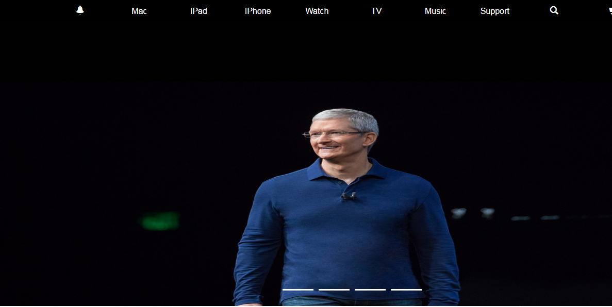

冯霄
SunnyWeb
I may not be prefect ， but I'm always me 。
我的信息
- 意向职位：
- Web前端开发
- 期望待遇：
- 面议
- 目标城市：
- 杭州
- 学 历：
- 专科
- QQ：
- 990605349
- 电 话：
- 15757155820
- 邮 箱：
- jsonFx@163.com
我擅长的
- HTML
- CSS
- JavaScript
- Html5
- jQuery
- Bootstrap
- PHP
我的心得
- 个人网站:
- https://fxjson.github.io
我的技能
- 熟练运用HTML+CSS 进行网页布局。
- 熟练使用javaScript的DOM操作实现网页特效, 并且对JS面向对象编 程具有一定了解。
- 熟悉jQuery库，并能够实现轮播图，tab切换等特效。
- 熟悉 H5新特性，如canvas、svg、video、audio、本地离线存储等。
- 熟悉CSS3的新特性，如新增选择器的应用，以及transform、translate 组合实现动画效果。
- 熟悉Bootstrap框架和相关组件运用，能实现页面响应式布局，并能封 装container组件、 栅格组件。
- 了解服务器端的相关知识，熟悉相关SQL指令如增、删、改、查等操作。
- 熟悉ajax运用机制，实现异步通信和跨域等，可以用面对对象的思想封 装ajax，实现自己的网络请求库。
- 会使用浏览器的后台调试代码。
- 熟悉使用gulp搭建前端开发自动工作流。
我的项目

仿apple官网
简介：仿照中国apple官网
主要运用技术：HTML+CSS、javaScript、jQuery、bootstrap


Myself
希望加入一家以技术为驱动的互联网公司，从事前端开发的工作。拥有良好的沟通能力,较强的自学能力和开发能力,拥有对代码满满的热情和足够的恒心耐心。